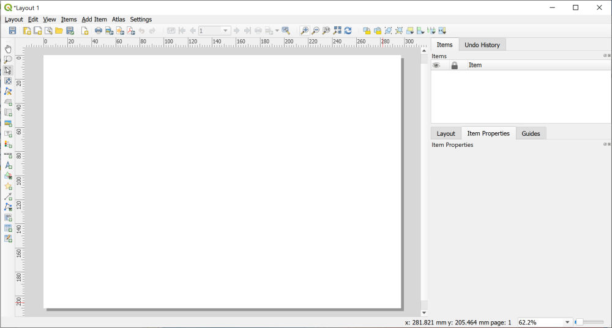

Layout and presentation
The background to layout and presentation will be covered in the lecture segment at the beginning of the class, and the presentation and any other supporting materials will be available in Minerva. The lecture segment should help you to understand why you are doing these exercises. If you still aren’t sure, please ask Clare.
Learning outcomes
When you have completed this section of the workbook you should be able to
- Layout your maps in such a way that they effectively communicate the content and purpose of your work to a user
- Select relevant map elements to include in a layout and set their properties to match the requirements of your map
- print or export your map layout to show it to it’s best advantage
Introduction
Once you’ve put in all of the hard work to produce a map of your field area or project, it is worth making the extra effort to ensure that you lay it out clearly and print or export it in a professional fashion. Make sure that you allow the time to do this. Care and patience can make the difference between a scruffy, unimpressive map that loses you marks, and a clear, professional map that gives a good first impression and causes your audience to take your work seriously.
Warning
Don’t underestimate the time that the final details can take and don’t leave this part of the preparation until the last hour before a deadline!
You won’t need to use all of the elements and features outlined here for every map. Equally this is not an exhaustive list of possible elements. You should already have some idea of what elements are useful, and should be able to make a decision for each case based on your existing knowledge of maps. If you think that you need to add something that is not listed here, e.g. a report based on a table, then use the extra information available at the end of the chapter and search on-line to find out how to add it.
So this chapter isn’t necessarily for working through in order. Make sure that you are aware of the contents and of what QGIS is able to do, and then make your own decisions about what you need to include based on the principles that will be covered in class.
The data for this chapter
You should use the map of the Llanbedr area that you have been creating in previous chapters. Try out all of the techniques listed below and then decide which you need to include on this layout before you export it.
Creating a print layout
In QGIS a print layout allows you to control the format and scale at which you print and export your map, and to lay out additional elements to complete the final product.
- Open your North Wales map project in QGIS if it isn’t already open
- Add a print layout by going to
Project > New Print Layout... - You’ll be asked to
Enter a unique print layout title- call it something likeThe Gravity of the Llanbedr area, North Wales. You can leave this blank if you wish. - Click
OK
QGIS will open your new blank layout in a new window. It should look something like the image below - though your toolbars may be in different places.

In this view you will see your map laid out as it will be when it is finally printed or exported. You’ll see the page outlined on screen and, once you have started adding elements you will see the content as it will look on the page.
Opening existing print layouts
Once you have created a print layout you can close it and open it again.
- Close the window containing the print layout (
Layout > Close) - To reopen it go to
Project > Layoutsand select your layout from the list - there is only one there at the moment so click on that.
Saving layouts
A layout is saved as part of the project so whenever you click on Save in your project it will save the layout too.
For now:
- Click on the
Savebutton in the layout window.